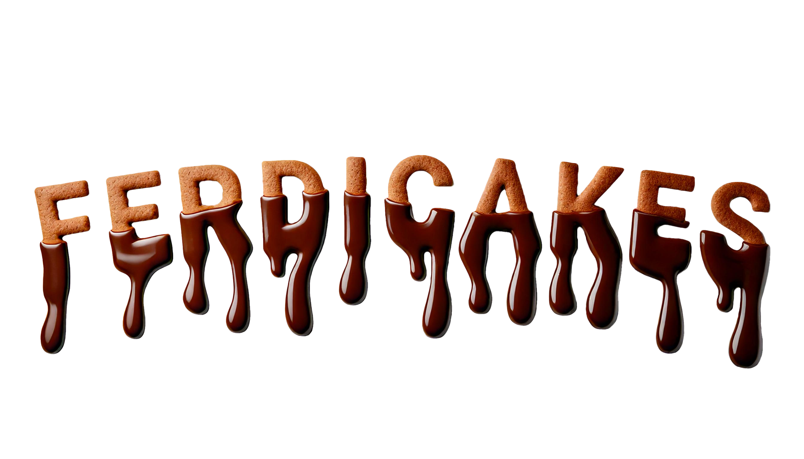

Landing Page
O que foi desenvolvido
O projeto FerdiCakes consistiu no desenvolvimento integral da identidade digital para esta confeitaria artesanal, focando na criação de uma experiência de usuário (UX) fluida e visualmente atraente. Utilizando a plataforma Wix, foi concebida do zero uma logomarca exclusiva e um layout personalizado, com o site estruturado como uma Landing Page de navegação única para maximizar a conversão.
Um diferencial crucial implementado foi a ênfase na segurança alimentar, onde cada produto é acompanhado por uma ficha técnica e um sistema visual de tags de alerta que indicam claramente a presença de alérgenos comuns (como trigo, leite ou ovo), facilitando a decisão de compra para clientes com restrições.
Processo Criativo: Banner 3D

O banner principal foi desenvolvido a partir de um rascunho feito à mão, posteriormente digitalizado e tratado no Adobe Fireworks para a aplicação de texturas que imitam fielmente chocolate e cookies, gerando um alto impacto visual na primeira dobra do site.
Aprendizados e Técnicas
O elemento central da experiência é o menu digital interativo, que funciona como vitrine do catálogo. A integração de um rodapé estratégico com Google Maps e canais de atendimento direto via redes sociais consolidou o site como um hub de contato completo para geolocalização da loja física.